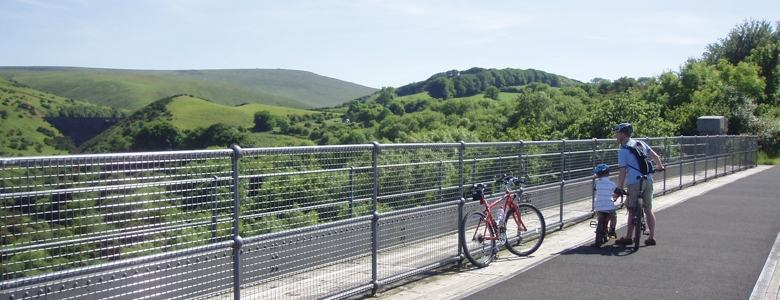
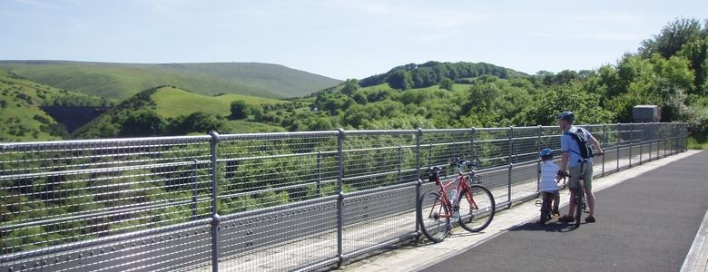

The Old Smithy is situated just 5 miles from Dartmoor National Park.
The spectacular National Trust attractions of Lydford Gorge, Cotehele House and Castle Drogo are also just a short drive away.
The Granite Way cycle route and footpath which runs along the northern perimeter of Dartmoor National Park, connecting Okehampton (Railway Station) and the pretty village of Lydford, is a convenient way to take in the Park’s stunning scenery. A steam engine service also operates from Okehampton Railway Station.
If you love the coast, the beautiful sandy beaches at Bude and Widemouth Bay are a 45 minute drive away, with Tintagel and Boscastle a little further along the coastline.
The Eden Project, Plymouth (for The National Aquarium and Historic dock side), the magnificent Lanhydrock House and The Lost Gardens of Heligan are also in easy reach for the prefect day trip.
For the keen sportsperson there are a host of local attractions including, golf courses, fishing lakes, horse riding and a North Shore mountain bike range (in the local woods).
Find out more about the accommodation, and pricing and availability.
To make a booking or if you require any further information, please contact us by using the enquiry form.